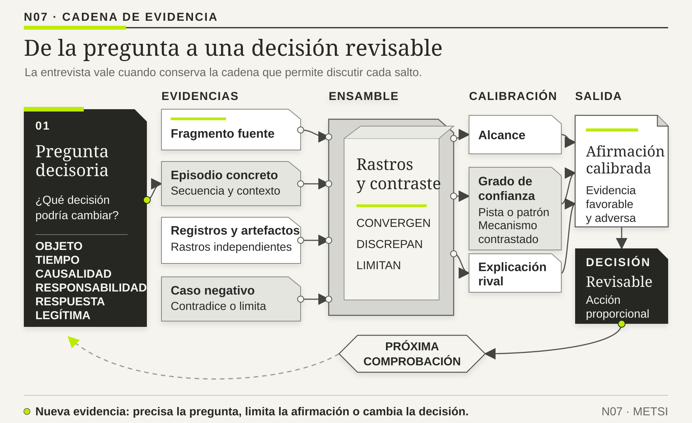

01
01Svend Brinkmann
OBRA PRINCIPAL UTILIZADAInterViews: Learning the Craft of Qualitative Research InterviewingSAGE · 3.ª edición, 2015 · con Steinar Kvale

Una entrevista de investigación busca episodios, mecanismos, decisiones, excepciones y significados.
Entrevistar no es pedir requisitos
Ruta de lectura: problema, distinciones, decisiones, prueba, transferencia y preparación para N08.

Nota. SIN NUM. identifica los aparatos de orientación y referencia que no integran la secuencia argumental.
Seis voces principales para ampliar, contrastar y discutir esta lectura.
01SAGE · 3.ª edición, 2015 · con Steinar Kvale
 02
02MIT Press, 2020
 03
03Cambridge University Press, 2007 · reedición del argumento formulado en 1987
 04
04NIST AI 600-1, 2024 · equipo coautor
 05
05NIST AI 600-1, 2024 · equipo coautor
 06
06NIST AI 100-4, 2024 · equipo coautor
N07 no resume estas fuentes ni las convierte en una receta. Las pone en tensión para construir juicio profesional.
¿Cómo producir evidencia sobre trabajo, decisiones y necesidades sin convertir preferencias declaradas en especificaciones?

Cada pregunta ilumina una parte de la experiencia y deja otras en sombra.
El proyecto llevaba seis semanas y necesitaba una cifra. La dirección había pedido justificar el reemplazo de un sistema antiguo antes de la reunión de presupuesto. El equipo tenía que demostrar cuánto tiempo se perdía, qué tareas generaban frustración y qué beneficios produciría una solución nueva. En la agenda figuraban veinte entrevistas. En la planilla de análisis ya existían columnas para «minutos perdidos», «errores del sistema» y «funcionalidad solicitada».
La primera entrevistada era responsable de coordinar un turno operativo. El investigador abrió la conversación con una pregunta que parecía directa: «¿Cuánto tiempo pierde por culpa del sistema viejo?». Ella miró hacia un costado, repasó mentalmente una jornada complicada y respondió: «Casi una hora». El investigador escribió 60 minutos. Luego preguntó qué función debía incorporar el reemplazo. La mujer pidió «una pantalla donde esté todo». El equipo salió satisfecho: tenía una cifra, un problema y un requisito.
Durante los días siguientes, la misma secuencia se repitió. Algunas personas hablaban de cuarenta minutos; otras, de noventa. Casi todas querían integración, automatización o una vista única. La presentación final mostraba un promedio de 67 minutos diarios desperdiciados por persona. Multiplicado por la dotación y por los días laborables, el costo anual parecía indiscutible. El título de una diapositiva decía: «El sistema actual consume miles de horas de valor».
Una semana antes de cerrar el diagnóstico, una analista pidió observar un turno completo. Quería saber en qué momento comenzaba y terminaba aquella «hora perdida». Acompañó a la misma empleada de la primera entrevista. Descubrió que los sesenta minutos no eran un bloque ni tenían una sola causa. Incluían revisar una excepción comercial, esperar autorización de una jefatura, llamar a otra área para interpretar un estado ambiguo, verificar una identidad, explicar una demora a una persona usuaria y documentar una decisión. Algunas de esas tareas existían porque las aplicaciones no intercambiaban información; otras protegían al servicio de un error; otras resolvían desacuerdos que ningún software podía decidir por sí solo.
La observadora volvió a la pregunta inicial y advirtió algo incómodo. La entrevista había ofrecido una causa, «el sistema viejo», antes de investigar el episodio. También había ofrecido una unidad, «tiempo perdido», que convertía coordinación, verificación y cuidado en desperdicio. Finalmente, había insinuado una solución: si el problema era el sistema, cambiarlo parecía la respuesta natural. La entrevistada no había mentido ni exagerado de manera deliberada. Había hecho algo completamente humano: organizar recuerdos parciales dentro del marco que recibió.
El equipo revisó las grabaciones. Cuando alguien dudaba, el entrevistador completaba la frase: «¿Fue por la lentitud?». Cuando aparecía una práctica útil, la traducía como «trabajo manual». Cuando una persona describía una regla contradictoria, la codificaba como «falta de capacitación». La guía que pretendía descubrir el problema estaba fabricando una versión coherente con la decisión que ya se deseaba tomar.
No hubo que descartar todas las entrevistas. Hubo que cambiar su estatuto. Las cifras dejaron de tratarse como mediciones y pasaron a ser percepciones que exigían contraste. Las funcionalidades solicitadas se convirtieron en pistas sobre problemas, riesgos y aspiraciones. Las frases generales llevaron a buscar episodios concretos. El equipo regresó con preguntas diferentes: «Llevame a la última vez que ocurrió», «¿qué sabías en ese momento?», «¿qué decisión tomaste?», «¿qué habría pasado si no intervenías?», «¿qué caso contradice esta explicación?».
La segunda ronda produjo menos certezas inmediatas y mucha más evidencia. Mostró que ciertas demoras sí dependían de integración; otras, de significados incompatibles; otras, de una autoridad que nadie había formalizado. La solución tecnológica seguía siendo posible, pero ya no era una consecuencia automática de la pregunta.
Esta historia contiene el problema metodológico de N07. Entrevistar no es abrir un canal para recoger requisitos que ya existen completos en la cabeza de alguien. Es construir una situación de memoria, lenguaje y poder. Cada pregunta ilumina una parte de la experiencia y deja otras en sombra. Una entrevista profesional vale cuando permite reconstruir episodios, conservar contradicciones y producir afirmaciones que puedan ser contrastadas; no cuando entrega rápido la respuesta que el proyecto esperaba escuchar.

Una entrevista de investigación busca episodios, mecanismos, decisiones, excepciones y significados. La persona entrevistada aporta experiencia situada; el analista conserva responsabilidad por interpretar, contrastar y no generalizar más allá de la evidencia. Preguntar qué función desea alguien puede ser un comienzo, pero no reemplaza comprender qué intenta lograr, qué ocurre y qué riesgo gestiona.
N06 cerró con una estrategia situada para Hotel Horizonte y una misión de evidencia concreta: reconstruir episodios en los que un mismo estado produjo decisiones diferentes. N07 recibe esa misión. No vuelve a decidir qué conviene investigar, cuánto vale saberlo ni cuándo detener la indagación. Su problema específico es otro: diseñar conversaciones capaces de producir relatos contrastables sin fabricar la respuesta que la estrategia espera.
El avance de este Núcleo consiste en pasar de una pregunta de proyecto a una cadena trazable entre pregunta, episodio, fragmento fuente, interpretación y decisión afectada. Esa cadena no sustituye el contacto con el trabajo real. Al final de N07 quedarán afirmaciones provisionales y preguntas de observación que N08 podrá contrastar allí donde la acción ocurre.
En Ingeniería de Software se utilizan entrevistas para relevar necesidades y requisitos. N07 conserva la conversación, pero cambia su producto inicial: antes de pedir soluciones, reconstruye episodios, decisiones y excepciones. La entrevista no entrega requisitos terminados; produce evidencia situada que luego debe triangularse con registros, observación y otras perspectivas. Esta concepción sigue a Brinkmann y Kvale (2015): entrevistar es una práctica social de producción de conocimiento, no una tubería neutral para extraer respuestas.
La diferencia es más profunda que un cambio de vocabulario. En un enfoque de extracción, se supone que el requisito ya existe en algún lugar: dentro de la cabeza de una persona usuaria, en la estrategia de una dirección o en un procedimiento todavía no documentado. El trabajo del analista sería formular preguntas claras, capturar respuestas y traducirlas a una especificación. Esa imagen funciona cuando la decisión ya está suficientemente encuadrada y lo que falta es acordar detalles. Falla cuando todavía están en discusión la frontera del sistema, la causa del problema, la distribución de autoridad o el resultado que importa.
En una investigación, la respuesta no se considera un objeto que la persona entrevistada entrega intacto. Se produce en una interacción. La pregunta selecciona un tiempo, una unidad de análisis y un lenguaje; la persona responde desde su experiencia, sus incentivos, lo que recuerda y lo que considera seguro decir; el entrevistador repregunta, toma notas y decide qué conservar. Después, otro conjunto de decisiones transforma el material en códigos, temas, hipótesis y recomendaciones. Cada etapa puede agregar comprensión o fabricar una certeza que la conversación nunca sostuvo.
Esto no vuelve inútil ni "subjetiva" a la entrevista. Vuelve necesario comprender qué clase de evidencia produce. Un registro técnico puede indicar que una solicitud tardó 4,8 segundos, pero no explica por qué una recepcionista volvió a verificar el dato antes de actuar. Una entrevista puede reconstruir el criterio, la duda y la consecuencia que no quedaron registrados, aunque no mida por sí sola cuántas veces ocurre. Una observación puede mostrar el comportamiento, pero no siempre revela qué información creía tener la persona. Ninguna fuente es completa; la calidad aparece al hacer explícitas sus capacidades y sus límites.
La entrevista tiene una fortaleza particular: permite recuperar significado. Palabras como "confirmada", "liberada", "urgente" o "cliente válido" no son etiquetas neutrales. Condensan reglas, responsabilidades y promesas. Dos aplicaciones pueden intercambiar correctamente un valor y, sin embargo, las áreas interpretar cosas distintas. Cuando el analista pregunta qué significa una palabra dentro de un episodio concreto, qué permitió hacer, qué impidió y quién podía modificarla, convierte una diferencia lingüística en una hipótesis sobre el funcionamiento del sistema.
También permite investigar decisiones que ya terminaron. La persona puede explicar qué señales observó, qué alternativa descartó, a quién consultó y qué riesgo intentó evitar. Esa explicación no se acepta como grabación perfecta: se contrasta con rastros y con otros relatos. Su valor consiste en volver investigable una racionalidad situada. Para un profesional de sistemas, esto amplía el objeto. Ya no se estudian sólo funciones o pantallas; se estudia cómo una organización sabe lo que cree saber y cómo transforma esa información en acción.
Distinción central. Una sesión de requisitos pregunta qué comportamiento deberá exhibir una solución acordada. Una entrevista de investigación pregunta qué situación estamos intentando comprender, qué mecanismos podrían producirla y qué evidencia permitiría distinguirlos. Ambas prácticas pueden formar parte del mismo proyecto, pero no son intercambiables ni necesariamente ocurren en el mismo momento.
Ejemplo simple. Una estudiante pide que el campus "mande más recordatorios" porque siempre entrega tarde. Si la solicitud se toma como requisito, la solución será otra notificación. Una entrevista episódica puede mostrar que el problema aparece sólo cuando una tarea cambia de comisión, que la fecha correcta queda en una devolución y que el recordatorio existente anuncia la fecha original. El pedido era razonable, pero contenía una teoría incompleta. La capacidad buscada no era recibir más mensajes; era reconocer cuál compromiso seguía vigente.
Contraejemplo. Si una organización ya decidió, por obligación regulatoria, que toda operación de alto riesgo requerirá doble aprobación, entrevistar no tiene que reabrir esa norma. Puede precisar excepciones, carga operativa, comprensión y evidencia de cumplimiento. Investigar no significa suspender toda decisión ni negar restricciones reales; significa no presentar como descubrimiento aquello que ya fue impuesto.
La pregunta parece respetuosa. Recepción pide un botón para liberar habitaciones, Comercial un tablero en tiempo real, Housekeeping notificaciones y Dirección un asistente conversacional. El equipo convierte respuestas en requisitos y demuestra escucha.
Pero las personas expresan problemas mediante soluciones disponibles. El botón puede condensar una dificultad de autoridad. El tablero puede intentar reparar desconfianza. La notificación puede responder a una demora que una integración debería resolver. El asistente puede simbolizar modernidad.
Copiar el pedido traslada al entrevistado la responsabilidad de diseño y conserva causas ocultas. Rechazarlo como “el usuario no sabe” sería igualmente pobre. La tarea es tratar la solución propuesta como evidencia: ¿qué episodio la originó?, ¿qué resultado esperado busca?, ¿qué daño evita?, ¿qué alternativa conoce?
Las personas describen el trabajo según procedimiento, identidad profesional, caso reciente o expectativa del entrevistador. Los episodios concretos reducen idealización.
Preguntas útiles:
El objetivo no es interrogar memoria como grabación exacta. Es producir una secuencia que pueda contrastarse con registros, documentos u observación.
Reconstrucción: eventos, tiempos y actores.
Contraste: cuándo el procedimiento funciona/no funciona.
Criterio: qué señal hace priorizar, escalar o detener.
Autoridad: quién puede confirmar un estado o aceptar un riesgo.
Evidencia: qué dato/documento sostiene la decisión.
Consecuencia: qué pasa si nadie interviene o si la decisión es errónea.
Caso negativo: episodio que contradice la explicación dominante.
Futuro prudente: qué capacidad no debería perderse y qué resultado debería cambiar.
No toda pregunta abierta es buena. “Contame tu experiencia” puede producir discurso genérico. Una cerrada puede precisar: “¿La habitación estaba físicamente lista?”. El criterio es la función y evitar incorporar la respuesta.
“¿Cuánto tiempo pierde por el PMS viejo?” presupone pérdida, causa y antigüedad relevante. “¿La aplicación le simplificaría?” invita aprobación social. “¿Por qué se resiste el equipo?” convierte no adopción en rasgo.
Alternativas:
El sesgo no se elimina por redactar perfecto. Se reduce declarando hipótesis, buscando refutación, entrevistando perspectivas y revisando guía.
Toda pregunta contiene decisiones metodológicas, aunque parezca espontánea. Primero fija un objeto: puede preguntar por una pantalla, una tarea, un episodio o una promesa de servicio. Segundo fija un tiempo: lo que normalmente ocurre, el último caso, un período o un futuro imaginado. Tercero propone una causalidad: puede dejarla abierta o incorporar una explicación. Cuarto distribuye responsabilidad: pregunta qué hizo alguien, qué permitió el entorno o quién debería corregir. Quinto define qué clase de respuesta parecerá legítima: una cifra, una opinión, una secuencia o un juicio moral.
Por eso "¿por qué los usuarios no adoptan el sistema?" no es una pregunta inocente. Da por existente un sistema adecuado, define la conducta esperada como adopción y localiza la explicación en las personas. Podría ser correcta, pero ya ha descartado alternativas: que la herramienta interrumpa el trabajo, que el indicador de uso sea incompleto, que existan riesgos no resueltos o que el sistema formal no permita cumplir la tarea. Una formulación más investigable sería: "¿En qué situaciones se usa cada canal para completar esta tarea, y qué consecuencias tiene?". La segunda pregunta no elimina la posibilidad de un problema de adopción; evita convertirla en la única explicación antes de reunir evidencia.
Las preguntas hipotéticas merecen cuidado especial. "¿Usaría una aplicación que...?" mide una reacción dentro de una conversación, no una conducta futura. La persona puede querer colaborar, imaginar condiciones ideales o subestimar el costo de cambiar hábitos. La respuesta sirve para explorar expectativas, vocabulario y objeciones; no permite estimar adopción. Para aproximarse a la conducta conviene investigar decisiones recientes, alternativas disponibles, fricciones, incentivos y momentos en los que la persona ya cambió de práctica.
Las preguntas de escala también pueden producir precisión aparente. Si se pide calificar de uno a diez la confiabilidad del sistema, un siete no significa lo mismo para todas las personas y no explica qué decisión depende de esa confianza. La escala puede ayudar a comparar percepciones en un diseño más amplio, pero la entrevista debe recuperar el ancla: "¿Qué tendría que ocurrir para que pasara de siete a cuatro?", "¿qué hizo la última vez que no confió?". La cifra se vuelve útil cuando conduce hacia condiciones observables.
Una guía robusta alterna cuatro movimientos. Abrir permite que aparezca el encuadre de la persona. Anclar lleva a un episodio. Profundizar reconstruye secuencia, información, autoridad y consecuencia. Contrastar busca excepción, caso negativo o explicación rival. No se trata de formular todas las preguntas posibles, sino de mover la conversación desde una declaración general hacia evidencia que pueda afectar una decisión.
Consideremos una frase frecuente: "necesitamos datos en tiempo real". Un recorrido pobre pregunta qué tablero prefieren. Un recorrido más productivo puede ser:
La secuencia puede revelar que "tiempo real" significa cinco minutos para Operaciones y cierre diario para Finanzas; o que el dato ya llega pero nadie confía en su procedencia; o que la decisión está bloqueada por autoridad, no por latencia. La entrevista no invalida la demanda. La descompone en mecanismos que pueden probarse.
La técnica del incidente crítico de Flanagan (1954) pide reconstruir un caso significativo, exitoso, fallido o sorprendente, porque los extremos vuelven visibles condiciones que el relato rutinario comprime. El incidente no se elige sólo por dramatismo. Debe estar relacionado con la capacidad que se investiga y permitir recuperar contexto suficiente. "La peor experiencia con el sistema" puede producir una anécdota intensa pero irrelevante; "la última vez que una contradicción entre estados cambió la habitación entregada" delimita un fenómeno.
La reconstrucción separa al menos seis capas: situación inicial, señales disponibles, acciones, criterios, resultado y explicación posterior. Esa separación evita el sesgo retrospectivo. Después de conocer el desenlace, las personas tienden a narrar señales como si siempre hubieran sido claras. Preguntar "¿qué sabía exactamente a las 12:42?" obliga a volver al horizonte de información del momento. Preguntar "¿qué alternativa parecía razonable entonces?" protege contra juzgar la decisión únicamente desde el resultado.
Un solo incidente no demuestra prevalencia ni causalidad. Sí puede refutar una afirmación universal, revelar una excepción de alto daño o diseñar nuevas mediciones. Si el equipo afirma que toda demora se debe a latencia y aparece un caso de treinta minutos con respuestas técnicas rápidas, la explicación necesita revisión. El valor del caso no reside en representar a toda la población, sino en tensionar el modelo con una configuración real.
El incidente exitoso es igualmente importante. Los proyectos suelen estudiar fallas y perder las prácticas que mantienen el servicio. Si un turno resuelve la misma contradicción en cuatro minutos, la entrevista puede revelar una política clara, una relación de confianza, una lista preparada o una persona que concentra conocimiento. Copiar el atajo sin comprenderlo puede trasladar un riesgo; ignorarlo puede destruir una capacidad. La comparación entre resultado adverso y favorable ayuda a distinguir qué condición realmente cambia la trayectoria.
La reconstrucción de decisiones bajo presión también dialoga con la investigación naturalista de Klein (1998). No interesa pedir una teoría general de cómo debería decidirse, sino recuperar señales, alternativas consideradas, experiencia disponible y restricciones tal como aparecieron en el momento. El relato sigue siendo una reconstrucción posterior. Su valor aumenta cuando permite localizar rastros y formular un contraste.
En Hotel Horizonte, la misión heredada de HH-06 parte de una frase recurrente: «el PMS es lento». La primera aplicación de HH-07 no busca confirmar ni refutar esa frase. Busca transformarla en una pregunta capaz de discriminar explicaciones. El equipo elige una llegada reciente en la que la reserva figuró confirmada y la entrega de la habitación demoró treinta y ocho minutos. Pide a Lucía Ferreyra que reconstruya qué vio primero, qué estado cambió, qué información consideró confiable, a quién consultó y qué riesgo intentó evitar.
La conversación produce una secuencia inicial y cuatro explicaciones rivales: latencia técnica, significados incompatibles entre áreas, autoridad ausente y promesa comercial difícil de cumplir. También produce una pregunta adversa: «¿recordás una llegada con los mismos estados que se resolvió rápido?». El primer resultado de HH-07 no es un requisito ni un diagnóstico. Es un episodio con puntos de contraste y rastros por buscar.

Un solo incidente no demuestra prevalencia ni causalidad. Sí puede refutar una afirmación universal.
N06 ya definió que la selección de fuentes responde a una misión de evidencia y no a un número ritual. N07 aplica ese criterio a la situación de entrevista. Entrevistar “cinco usuarios” no tiene significado universal. Si el servicio cambia por turno, canal, experiencia, tipo de reserva y accesibilidad, la selección debe cubrir los contrastes pertinentes para la afirmación investigada.
El poder de información propuesto por Malterud, Siersma y Guassora (2016) ofrece un criterio más preciso que acumular testimonios: la cantidad necesaria depende de la especificidad de la muestra, la precisión del propósito, la calidad del diálogo, el marco conceptual y la estrategia de análisis. La saturación no significa que ya no aparezca ninguna novedad. Puede indicar que ciertos mecanismos se repiten para el propósito actual. No permite estimar prevalencia. Una excepción rara de alto daño puede importar aunque aparezca una sola vez.
Conviene registrar quién no fue entrevistado y cómo limita la conclusión.
Ejemplo breve: demora. “¿El sistema es lento?” invita una evaluación general. “Contame la última vez que una demora cambió lo que hiciste” recupera condiciones y consecuencias.
Una ronda de entrevistas debe diseñarse como un pequeño sistema de aprendizaje. Antes de comenzar, el equipo declara qué afirmaciones necesita sostener, qué variaciones podrían cambiarlas y qué decisión está en juego. Esto impide convertir «hablar con usuarios» en una actividad ritual. Si la decisión es modificar una política nocturna, entrevistar sólo al turno diurno produce volumen sin cobertura. Si se evalúa una experiencia de accesibilidad, cinco personas sin barreras relevantes no compensan la ausencia de quienes sí las encuentran.
La cantidad se vuelve significativa cuando se relaciona con una estructura de contraste. Puede organizarse una matriz por turno, antigüedad, canal, tipo de episodio y desenlace. No hace falta cubrir todas las combinaciones como si se tratara de una encuesta estadística; sí conviene reconocer dónde se concentra la evidencia y dónde quedan huecos. Una muestra cualitativa bien argumentada no promete representatividad numérica. Promete que las perspectivas elegidas son pertinentes para examinar los mecanismos y límites de la afirmación.
También importa distinguir persona de episodio. Una misma persona puede narrar varios casos con condiciones diferentes; diez personas pueden repetir el mismo relato institucional sin aportar variación. Cuando el objeto es comprender cómo se resuelve una excepción, seleccionar episodios contrastantes puede ser más informativo que aumentar participantes de manera indiscriminada. El informe debe indicar qué se muestreó: roles, experiencias, eventos o decisiones.
La calibración continúa durante el trabajo. Después de cada pocas entrevistas, el equipo revisa qué códigos aparecen, qué explicación se fortalece, cuál pierde apoyo y qué pregunta todavía no discrimina alternativas. Si todos responden de manera idéntica, eso puede significar recurrencia real, pero también una pregunta inductiva, un discurso aprendido o falta de seguridad. Antes de declarar saturación conviene cambiar el punto de entrada, pedir un caso negativo o consultar a quien soporta consecuencias distintas.
El criterio de cierre debe ser explícito. Una ronda puede terminar cuando los mecanismos relevantes se repiten en los contrastes previstos, cuando existe evidencia suficiente para elegir el siguiente experimento o cuando el costo de seguir preguntando supera el valor esperado para esa decisión. Terminar no significa que «ya sabemos todo». Significa que sabemos lo suficiente para actuar de manera proporcional y que conservamos registro de las incertidumbres que permanecen.
Ejemplo breve: veinte entrevistas idénticas. Si veinte personas afirman que «la integración falla», el equipo todavía no sabe si hablan de pérdida de mensajes, demora, significados incompatibles o desconfianza. Una sola reconstrucción precisa con registros puede aportar más capacidad de decidir que veinte menciones generales. La recurrencia aumenta relevancia; la especificidad construye explicación.
La entrevista ocurre dentro de relaciones. Una empleada puede temer que revelar atajos produzca sanción. Una persona tercerizada puede depender del contrato. Un huésped puede sentirse obligado a agradecer compensación.
El investigador debe explicar:
Entrevistar a jefatura con equipo puede silenciar. Prometer anonimato imposible es engañoso. Registrar credenciales, salud o conflictos sin necesidad crea exposición.
La seguridad modifica calidad: si una persona no puede decir la verdad operacional, la entrevista producirá el procedimiento oficial.
Este problema no se resuelve únicamente con una cláusula de confidencialidad. Costanza-Chock (2020) obliga a mirar quién define el problema, quién soporta las consecuencias y quién puede impugnar la interpretación. Una investigación puede cumplir un protocolo formal y seguir siendo extractiva si convoca a las personas sólo para legitimar una decisión ya tomada. Diseñar la situación incluye separar la entrevista de la evaluación de desempeño, ofrecer canales alternativos, anticipar riesgos de identificación y explicar qué capacidad real tendrá la contribución para modificar el proyecto.
En Hotel Horizonte, entrevistar juntas a Lucía y a su jefatura permitiría comparar vocabulario, pero volvería costoso narrar atajos nocturnos. HH-07 separa primero las conversaciones con Recepción, Housekeeping, Comercial y Tecnología. Explica que se investigan episodios y no desempeños individuales, limita el acceso a grabaciones y registra por separado las atribuciones sensibles. Luego convoca una devolución sobre patrones sin exponer quién narró cada caso.
La composición también busca contraste. Se seleccionan turnos con distinta experiencia, episodios con y sin sobreventa, llegadas directas y de intermediarios, casos resueltos rápido y casos demorados. El objetivo no es repetir la estrategia de muestreo de N06, sino asegurar que la conversación permita expresar diferencias que la jerarquía o el relato institucional podrían borrar.
Escuchar exige conservar lenguaje y significado, pero el análisis transforma material. El profesional agrupa, contrasta e interpreta. Debe distinguir:
Si Recepción dice “Housekeeping nunca actualiza”, la síntesis no debe convertirlo en hecho. Puede registrar percepción y buscar episodios. Tal vez actualización ocurre, pero llega tarde o significa otra cosa.
La devolución a participantes puede aclarar la interpretación, aunque la persona no posee autoridad exclusiva sobre el análisis. También puede estar condicionada por relaciones de poder.
Una ficha de entrevista debería conservar:
Los hallazgos sin fuente se vuelven frases de autoridad del equipo. Las citas decorativas tampoco prueban generalidad. La trazabilidad conecta conclusión con material y límite.
Un protocolo no es un guion rígido. Asegura que las conversaciones respondan la pregunta y permite comparar sin impedir exploración. Incluye:
Conviene ensayarlo con una persona y revisar. Una pregunta puede ser clara para el equipo e incomprensible para el dominio. El orden también influye: comenzar por evaluación general puede sesgar recuerdos; reconstruir primero el caso permite interpretaciones después.
El entrevistador debe saber abandonar el guion cuando aparece un episodio crítico y volver al propósito. La consistencia no exige formular idénticas palabras, sino cubrir las decisiones comparables.
Ante “siempre pasa”, preguntar por última vez y excepción. Ante “es lento”, pedir operación, medida y comparación. Ante “necesitamos integración”, preguntar qué información, momento y decisión. Ante “nadie usa”, buscar quién sí y por qué.
Sondas útiles:
El silencio es una herramienta. Completar demasiado rápido la respuesta produce acuerdo aparente.
El análisis puede comenzar con códigos descriptivos, como evento, espera, fuente, decisión y excepción, y luego construir mecanismos. La frecuencia ayuda a ver recurrencia, pero no determina importancia. Un daño severo raro puede dominar. La codificación reflexiva de Braun y Clarke (2021) permite recordar que un tema no aparece solo en los datos: se construye mediante decisiones analíticas que deben conservar relación con los fragmentos y con la pregunta de investigación.
Una matriz por episodio permite comparar:
Los temas deben volver a citas y episodios. Si “falta de confianza” no puede conectarse con conductas o afirmaciones, es una abstracción débil. Las contradicciones se mantienen en una columna propia.


El salto más peligroso ocurre después de entrevistar. El equipo escucha una frase potente, la convierte en hallazgo y la usa para justificar una funcionalidad. Para impedirlo conviene conservar una cadena de inferencia con niveles explícitos. Cada nivel responde una pregunta distinta y admite un tipo de crítica diferente.
El primer nivel es el fragmento fuente: qué dijo o mostró la persona, en qué momento y frente a qué pregunta. El segundo es la reconstrucción del episodio: qué actores, eventos y condiciones aparecen al integrar distintos fragmentos. El tercero es el código descriptivo: una etiqueta cercana al material, por ejemplo "verificación paralela" o "espera de autorización". El cuarto es el patrón: recurrencia o variación entre episodios. El quinto es el mecanismo propuesto: una relación explicativa, como "la incompatibilidad entre criterios obliga a verificar fuera del sistema". El sexto es la implicación de decisión: qué alternativa, prueba o restricción cambia si el mecanismo se sostiene.
No todos los proyectos necesitan una herramienta sofisticada, pero sí necesitan distinguir esos niveles. Si la frase "nunca confío en la pantalla" se transforma directamente en "reemplazar la interfaz", desaparecen preguntas esenciales. ¿La desconfianza se refiere a exactitud, actualización, procedencia o autoridad? ¿Aparece en toda operación o sólo frente a ciertas categorías? ¿La persona verifica porque el dato falla o porque soporta un daño que nadie acordó? La misma cita puede conducir a intervenciones completamente distintas.
Una tabla de análisis puede incluir, para cada afirmación, evidencia favorable, evidencia adversa, alcance, grado de confianza y próxima comprobación. El grado de confianza no pretende convertir el análisis cualitativo en una probabilidad exacta. Obliga a declarar si se trata de una pista, un patrón recurrente o un mecanismo contrastado con fuentes independientes. La honestidad sobre ese estado permite actuar proporcionalmente: una pista puede justificar otra entrevista; un patrón puede justificar un piloto; una decisión irreversible exige más.
La reflexividad completa la cadena. El analista registra cómo su posición, su guía y el contexto pudieron influir. Si el equipo representa al área que comprará el sistema, las personas pueden exagerar problemas para obtener inversión. Si el entrevistador es jefe, pueden ocultar prácticas. Si el proyecto fue anunciado como "modernización con IA", las respuestas tenderán a usar ese lenguaje aunque el problema central sea otro. Reconocer esa influencia no invalida los datos; orienta los contrastes que hacen falta.
Conviene realizar sesiones de contraste entre analistas. Dos personas pueden codificar el mismo episodio de manera diferente: una como error humano y otra como ambigüedad de regla. El objetivo no es alcanzar acuerdo mecánico, sino volver visibles los supuestos que sostienen cada lectura. El desacuerdo se resuelve volviendo al material, precisando definiciones o aceptando explicaciones rivales para una prueba posterior. La consistencia obtenida por borrar matices es peor que una divergencia bien documentada.
Ejemplo trabajado: "Recepción no usa el procedimiento". Una supervisora afirma que el turno nocturno saltea una validación. La nota fuente registra la frase. Los episodios muestran que la validación requiere una respuesta de Finanzas que no está disponible de madrugada. El patrón aparece sólo en reservas con garantía corporativa. El mecanismo propuesto no es resistencia genérica: la regla supone una autoridad ausente en ese horario. La decisión deja de ser "capacitar para cumplir" y pasa a comparar alternativas: autoridad delegada, validación diferida, restricción comercial o guardia. La entrevista no resolvió el diseño, pero cambió la teoría del problema y, por lo tanto, el conjunto de soluciones razonables.
Caso adverso. En dos episodios con la autoridad disponible, el turno también omitió la validación porque el campo resultaba difícil de encontrar. La explicación organizacional no elimina la técnica. Los mecanismos pueden coexistir. Una investigación madura evita la competencia artificial por una única causa y pregunta cuánto explica cada mecanismo, en qué condiciones y qué riesgo queda si se interviene sólo uno.
Triangular no significa buscar tres fuentes que digan lo mismo. Significa combinar fuentes cuyos errores y alcances sean diferentes. La entrevista recupera significado y criterio; los registros aportan secuencia y frecuencia dentro de lo que fue instrumentado; la observación muestra actividad y entorno; los documentos expresan la norma; un experimento prueba qué cambia al intervenir. Cuando convergen, la afirmación se fortalece. Cuando divergen, aparece una pregunta más precisa.
Si los registros indican respuestas rápidas y las entrevistas describen lentitud, no es necesario elegir entre "dato objetivo" y "percepción subjetiva". Tal vez el registro técnico mide sólo procesamiento del servidor y la persona mide el tiempo completo hasta poder decidir. Tal vez el sistema responde rápido pero exige repetir información. Tal vez un episodio reciente domina el recuerdo. La divergencia obliga a alinear unidades: qué reloj comienza, cuál termina y qué resultado esperado importa.
La triangulación también protege a las personas. Sin contraste, una cita puede convertir a un individuo en fuente única de una acusación o en representante de todo un grupo. Al reconstruir condiciones y rastros, el análisis desplaza la atención desde culpables hacia mecanismos. Eso no elimina responsabilidad: permite asignarla de manera más justa, distinguiendo quién ejecutó una acción, quién diseñó la regla, quién aceptó el riesgo y quién puede reparar.
Ambas pueden ser útiles, pero tienen propósitos distintos. La entrevista produce comprensión/evidencia. La sesión de requisitos negocia comportamiento y restricciones después de construir suficiente contexto. Si se mezclan, la persona puede creer que cada idea será implementada y el analista puede cerrar prematuramente.
El equipo debe comunicar si está investigando, validando o decidiendo. También debe devolver cómo se utilizó la contribución. Participar sin influencia visible genera fatiga.
Ejemplo breve: jefatura presente. Una recepcionista minimiza errores frente a su supervisora. La composición de la entrevista modifica qué evidencia resulta segura de expresar.
Una entrevista colectiva o un taller permite observar acuerdo, lenguaje compartido y negociación, pero no reemplaza entrevistas individuales. La presencia de pares y jerarquías cambia lo decible. Es útil cuando la interacción entre perspectivas es el objeto; es riesgoso para prácticas sensibles.
Si Recepción y Housekeeping reconstruyen juntas un episodio, pueden descubrir diferencias de evento. Si una jefatura evalúa en público, los atajos desaparecerán. El diseño debe decidir composición, facilitación y forma de registrar disenso.
Después del análisis conviene devolver una síntesis: “la interpretación propuesta es…”, con evidencia y preguntas. Los actores pueden corregir contexto o mostrar casos. Esta devolución, a veces llamada validación con participantes, no es votación de verdad; es otra fuente.
Debe comunicarse qué cambió y qué no, para evitar participación extractiva. Si una sugerencia no se adopta, se explica por restricciones, evidencia o compromiso entre alternativas. Esta trazabilidad construye confianza y mejora la calidad de futuras conversaciones.
No se evalúa por duración ni cantidad de citas. Una buena entrevista:
Una conversación agradable puede ser metodológicamente pobre; una contradicción incómoda puede ser altamente productiva.
Las preguntas generales invitan teorías personales: “normalmente hacemos...”. Las episódicas anclan en tiempo, secuencia y decisiones: “volvamos a la última llegada con una habitación no disponible; ¿qué ocurrió primero?”. El episodio ofrece señales contrastables.
La memoria sigue siendo reconstructiva. El actor puede ordenar eventos, omitir rutinas o explicar con conocimiento adquirido después. Pedir artefactos, mensajes, pantallas y horarios ayuda a reconstruir. También sirve solicitar un caso que contradiga el primero.
El sesgo retrospectivo vuelve obvias señales que antes eran ambiguas. Preguntar “¿qué sabía en ese momento?” separa información disponible de explicación posterior. Preguntar “¿qué alternativas consideró?” revela decisión y restricciones.
Las emociones no son ruido. Frustración, temor o orgullo pueden señalar impacto, identidad y riesgo. No prueban causalidad, pero orientan investigación. Deben registrarse sin convertir interpretación psicológica en diagnóstico.
Cuando fuentes difieren, confrontar de forma acusatoria reduce seguridad y produce defensa. Puede presentarse la discrepancia como problema del sistema: “en estos registros aparece otra secuencia; ¿en qué condiciones ocurre cada una?”.
La contradicción puede deberse a roles, momentos o definiciones. Dirección observa indicadores; recepción vive excepciones; housekeeping usa otro evento de inicio. Ambas versiones pueden ser correctas dentro de fronteras distintas.
El entrevistador debe buscar evidencia adversa a su propia hipótesis. Si cree que el PMS causa demora, pregunta por casos donde el sistema respondió rápido y la espera continuó. La calidad no se mide por coherencia narrativa, sino por capacidad de discriminar explicaciones.
Las discrepancias se conservan en el análisis. Resolverlas mediante redacción ambigua impide aprender. Pueden convertirse en preguntas para observación o datos.
Ejemplo breve: transcripción. El audio registra palabras y no necesariamente gestos, objetos señalados o quién fue interrumpido. Toda transcripción ya es un recorte.
La transcripción completa puede ser útil y costosa. La nota selectiva es más liviana y puede perder contexto. El diseño depende de sensibilidad, propósito y capacidad. En todos los casos debe distinguir cita, paráfrasis, interpretación y pregunta.
El análisis comienza identificando episodios, condiciones, acciones, razones, consecuencias y excepciones. Luego compara entre casos. Los códigos ayudan a encontrar patrones, pero pueden fragmentar historias. Conservar resúmenes episódicos evita perder secuencia.
Una afirmación analítica debería enlazar evidencia favorable y adversa. “Recepción no confía en el estado de habitación” puede apoyarse en acciones de verificación, relatos y divergencias; también registrar turnos donde sí confía. El alcance importa.
La devolución al actor verifica comprensión, no delega conclusión. Puede corregir un hecho y rechazar una interpretación por interés. El equipo conserva responsabilidad de contrastar.
La persona debe comprender propósito, uso, voluntariedad posible, registro y confidencialidad. En relaciones laborales, aceptar puede no ser plenamente libre. Reducir presión requiere canales, separación de evaluación y cuidado en devolución.
No todo dato útil debe recogerse. Historias personales, salud o conflictos pueden exceder necesidad. Minimizar protege y mejora foco. Si aparece una denuncia o riesgo grave, deben existir protocolos; prometer secreto absoluto puede ser irresponsable.
La anonimización tiene límites. Una cita de “la única supervisora nocturna” es identificable. El informe puede combinar casos, parafrasear o restringir acceso, dejando trazabilidad protegida para el equipo autorizado.
La reciprocidad exige devolución y uso responsable. Extraer conocimiento sin mostrar consecuencia deteriora confianza para futuras investigaciones.
Una preferencia expresada no es un requisito automático. “Necesito una pantalla con todas las reservas” puede responder a falta de confianza, fragmentación o autoridad. Convertirla literalmente congela una solución local.
El equipo traduce episodio en necesidad, resultado esperado, información, regla, excepción y criterio. Después propone alternativas y valida. La trazabilidad conserva la expresión original para no borrar perspectiva.
Los conflictos no se resuelven acumulando requisitos. Si comercial pide flexibilidad y finanzas control, la decisión requiere estrategia y autoridad. La entrevista revela la tensión; no determina quién gana.
Un requisito de calidad puede emerger de trabajo: recepción necesita detectar contradicción antes de prometer; housekeeping necesita estabilidad de prioridad; el huésped necesita alternativa sin dispositivo. Estas formulaciones abren diseño.
Una técnica potente consiste en usar un objeto como ancla: una reserva, un registro técnico, una planilla, una captura o un reclamo. En lugar de hablar del proceso ideal, se recorre qué representa cada campo, quién lo modifica, qué se infiere y qué ocurre cuando falta. El objeto cumple aquí una función de entrevista. La indagación contextual de Beyer y Holtzblatt (1997) agrega otra exigencia, observar actividad y entorno mientras el trabajo ocurre. Esa capa corresponde a N08 y no debe darse por cubierta con el relato.
El artefacto activa memoria y muestra semántica. También puede imponer su estructura: lo que no está registrado desaparece. Por eso se pregunta qué información quedó fuera, qué conversación acompañó y qué decisión no puede reconstruirse.
Otra variante reconstruye una decisión crítica. Se identifica momento, información disponible, alternativas, autoridad, presión y resultado. Esto revela cómo funciona el sistema de decisión, no solo el flujo operativo.
Los artefactos pueden contener datos sensibles. Deben minimizarse, enmascararse y manejarse según propósito. Mostrar un caso real en una sesión amplia puede violar privacidad aunque facilite comprensión.
Una entrevista es insuficiente si solo produce opiniones generales, soluciones pedidas, confirmación de la hipótesis y una lista sin secuencia. También si no distingue lo que la persona hizo de lo que cree que debería hacerse.
Otra señal es la ausencia de excepciones. Todo proceso real tiene variación. Si el relato coincide exactamente con el procedimiento, puede faltar confianza, memoria episódica o profundidad. Preguntar por la última vez que algo no funcionó ayuda.
La fluidez tampoco prueba calidad. Una conversación agradable puede evitar conflicto; una entrevista difícil puede revelar tensiones. El criterio está en la evidencia y en las decisiones que permite revisar.
Después de cada sesión el equipo debería registrar qué aprendió, qué contradice, qué pregunta surge, qué fuente necesita y qué cambio haría al protocolo. Sin esa reflexión, repetir entrevistas solo multiplica material.
Ejemplo breve: resumen de IA. El resumen fusiona dos relatos incompatibles en una conclusión prolija. Volver a segmentos originales permite conservar desacuerdo útil.
Al cerrar una ronda, conviene formular afirmaciones en cinco capas. Primera: qué ocurrió según la fuente. Segunda: qué evidencia adicional lo sostiene. Tercera: qué mecanismo se propone. Cuarta: qué decisión podría cambiar. Quinta: qué condición invalidaría la interpretación.
Este formato impide saltar de una frase a una funcionalidad. Si varias personas piden una vista unificada, el mecanismo puede ser fragmentación, autoridad o carga cognitiva. Cada uno conduce a una respuesta diferente.
La capa de invalidación protege contra apego. “Si observamos que los estados son consistentes y la demora aparece antes, revisaremos la hipótesis”. La entrevista se integra así a un ciclo de investigación, modelado y acción.
La calidad final no reside en citar muchas voces, sino en representar con justicia sus perspectivas y construir una explicación que pueda ser cuestionada.
Antes de entrevistar, el equipo explicita qué decisión podría cambiar y qué sesgos trae. Revisa vocabulario, acceso y riesgos. Un protocolo común mejora comparabilidad, pero debe permitir seguir hallazgos inesperados.
Después, una síntesis inmediata conserva contexto: qué sorprendió, qué contradijo, qué quedó sin preguntar y cómo influyó la situación. Separar este memo de la transcripción evita presentar interpretación como cita.
El cierre con la persona debe confirmar próximos pasos, uso y canal de corrección. No se prometen cambios que el equipo no puede decidir. Esta honestidad es metodológica: expectativas falsas alteran futuras respuestas y legitimidad.
Una entrevista está completa cuando su evidencia entra en el sistema de decisiones con trazabilidad y protección; no cuando termina la conversación.
La duración no define profundidad. Una conversación breve sobre un episodio bien elegido puede aportar más que una hora de opiniones. El criterio es si aparecen secuencia, decisión, evidencia, variación y consecuencia suficientes para orientar el siguiente contraste.
La entrevista produce una pieza de evidencia situada; su fuerza proviene del contraste y de la trazabilidad, no de la autoridad retórica de una cita.
Por eso una frase memorable nunca debe reemplazar el episodio, las condiciones y las fuentes que permiten interpretarla responsablemente.
En Hotel Horizonte, HH-07 integra las conversaciones en torno de una frase que se repite en las reuniones: «el PMS es lento». En lugar de preguntar si debería reemplazarse, selecciona un episodio reciente en el que una huésped esperó treinta y ocho minutos pese a tener una reserva confirmada. La unidad de análisis no será la opinión general sobre la plataforma, sino el recorrido completo desde la llegada hasta la entrega de la habitación.
Elena Acosta, directora general, abre la ronda. Cuando se le pide el problema más urgente, relaciona la demora con reputación, dependencia de heroicidades y necesidad de modernización. Su afirmación no se descarta, pero se separan tres niveles: la observación indica que hay demoras y reclamos; la interpretación sostiene que la plataforma sería la causa dominante; la decisión preferida consiste en reemplazarla. La entrevista busca qué episodios conoce directamente, qué indicadores consulta y qué resultado debería cambiar. Elena reconoce que trabaja con tableros mensuales y relatos de jefaturas; no presencia la mayoría de las llegadas.
Lucía Ferreyra, jefa de recepción, reconstruye HH-07 minuto a minuto. La reserva aparecía confirmada, pero la garantía figuraba pendiente en una pantalla y válida en otra. La habitación había sido marcada como limpia; todavía faltaba una revisión de mantenimiento. Lucía llamó a Housekeeping, consultó a Comercial por la condición prometida y pidió autorización para ofrecer una alternativa. El PMS respondió en segundos durante casi todo el episodio. La espera no desaparece de la investigación: cambia de forma. Ahora debe explicarse qué información fue confiable, quién podía decidir y por qué una misma promesa atravesaba sistemas con reglas distintas.
Ricardo Sosa, gerente de operaciones, aporta un contraste. Recuerda episodios similares resueltos en menos de cinco minutos cuando la habitación alternativa ya estaba identificada y la política de compensación era clara. Esto debilita la explicación «toda demora proviene de lentitud técnica» y fortalece otra: la combinación de estado ambiguo, autoridad tardía y falta de una opción preparada amplifica el tiempo. Ricardo también advierte que algunos atajos nocturnos no aparecen en el procedimiento oficial. Si la entrevista se realizara frente a una jefatura evaluadora, probablemente no serían mencionados.
Federico Müller, responsable de tecnología y datos, revisa los registros vinculados con el relato. Encuentra una sincronización tardía de siete minutos entre el canal de venta y el PMS, pero no una caída. También descubre que «garantía válida» no significa lo mismo para Comercial y Recepción: un área acepta la promesa de facturación corporativa; la otra necesita una autorización operativa. La integración puede transportar el dato sin resolver esa diferencia semántica.
La entrevista con cada persona cumple una función distinta. Elena hace visible la decisión estratégica y los compromisos políticos; Lucía reconstruye el trabajo situado; Ricardo aporta variación y consecuencias operativas; Federico contrasta el relato con rastros técnicos. Ninguna voz contiene por sí sola «el requisito correcto». El resultado de la ronda es una estructura de evidencia:
El equipo formula entonces un protocolo breve para veinte episodios estratificados por turno, canal, tipo de reserva y resultado. Preguntará por la secuencia y no sólo por la evaluación; buscará evidencia que fortalezca y debilite cada explicación; observará cuándo una respuesta depende de jerarquía, reputación o temor a sanción. El producto no será una votación sobre el PMS. Será una base defendible para decidir si conviene integrar estados, acordar significados, rediseñar autoridad, preparar contingencias o reemplazar componentes.
El caso también muestra una regla de seguridad. Las frases atribuidas no deben publicarse de manera que expongan atajos o conflictos individuales. En el material de trabajo se conserva trazabilidad con acceso restringido; en la devolución colectiva se presentan patrones, condiciones y decisiones sin convertir a una persona en «la causa». Investigar el sistema exige proteger a quienes permiten verlo.

El perfil de IA generativa de NIST, NIST AI 600-1 (2024), advierte sobre confabulación, privacidad y homogeneización de salidas. NIST AI 100-4 (2024) muestra que procedencia y transformaciones importan para interpretar contenido digital. En una entrevista, un servicio de transcripción o resumen agrega actores, condiciones de tratamiento de datos y decisiones editoriales.
La práctica defendible conserva audio cuando corresponde y existe consentimiento, vincula cada afirmación con su fragmento, identifica omisiones y registra qué produjo la IA y qué verificó una persona. Una síntesis automática puede acelerar análisis, pero no debe borrar silencios, dudas o contradicciones. El Reglamento europeo 2024/1689 refuerza la necesidad de informar determinadas interacciones con IA; incluso fuera de su jurisdicción, la transparencia es una condición ética de la investigación.
En 2026, la pregunta profesional ya no es si una herramienta puede transcribir o resumir. Puede hacerlo, con distintos grados de calidad. La pregunta es qué transformación resulta admisible para la decisión y qué evidencia debe sobrevivir. Un resumen para recordar temas pendientes tolera más compresión que una cita utilizada para atribuir responsabilidad. Un agrupamiento exploratorio de códigos puede admitir falsos positivos que luego se revisan; una recomendación sobre riesgo laboral no. La intensidad del control debe crecer con el daño, la sensibilidad y la irreversibilidad.
La automatización introduce al menos cinco desplazamientos. Primero, de voz a texto: acentos, nombres, jerga, negaciones y superposiciones pueden registrarse mal. Segundo, de texto a resumen: se eligen temas, se eliminan repeticiones y se decide qué parece central. Tercero, de resumen a código: expresiones diferentes se agrupan bajo una categoría. Cuarto, de código a patrón: la herramienta puede privilegiar lo frecuente y normalizar casos minoritarios. Quinto, de patrón a recomendación: una explicación plausible puede presentarse con una fluidez que oculta su carácter inferencial. Cada desplazamiento necesita una posibilidad real de volver atrás.
Un control mínimo consiste en conservar identificadores de segmento. Si una síntesis afirma que "los turnos nocturnos desconfían del PMS", el analista debe poder abrir los fragmentos que originaron la afirmación, comprobar quién lo dijo, en qué contexto y qué casos adversos existen. Sin esa relación, la IA no aceleró análisis: produjo una nueva fuente opaca. La trazabilidad puede implementarse con códigos simples y almacenamiento controlado; no requiere exponer todo el audio a toda la organización.
Los modelos de lenguaje ofrecen velocidad para explorar y comparar una primera codificación, pero no convierten el resultado en una lectura neutral. La coincidencia con códigos humanos depende del material, de las instrucciones, del esquema y del criterio de comparación. Una tasa de acuerdo no prueba que la categoría sea conceptualmente adecuada ni que preserve el caso negativo. La herramienta puede reproducir el código dominante con gran consistencia y seguir respondiendo una pregunta equivocada.
También cambia la entrevista misma. Si una persona sabe que será transcripta por un servicio externo o que un modelo elaborará perfiles, puede modificar lo que está dispuesta a decir. El consentimiento debe describir el tratamiento real, no limitarse a "esta reunión será grabada". Importan proveedor, ubicación, retención, entrenamiento, controles de acceso y posibilidad de eliminación. En un equipo pequeño, quitar el nombre no vuelve anónimo un episodio reconocible.
La IA puede ayudar antes de conversar: revisar una guía en busca de preguntas inductivas, proponer hipótesis rivales o simular cómo distintos roles podrían interpretar un término. Esas salidas sirven como material de preparación, nunca como sustituto de actores reales. Durante la entrevista, sugerencias automáticas pueden ampliar sondas, pero también competir con la escucha y volver rígido el encuentro. Después, la herramienta puede proponer códigos, buscar segmentos relacionados o detectar preguntas no respondidas. En todos los momentos, la responsabilidad de propósito, consentimiento, interpretación y decisión permanece humana.
Un protocolo práctico de uso responsable puede resumirse así:
Ejemplo 2026: el resumen que borró la excepción. Seis entrevistas describen que una integración facilita el cierre del turno; una persona relata que el mismo mecanismo duplicó un cobro en una reserva corporativa. El resumen automático produce: "consenso general sobre beneficios de integración, con preocupaciones menores". La frase es fluida y estadísticamente intuitiva, pero metodológicamente peligrosa. La excepción puede ser rara y, aun así, dominar el riesgo. El control correcto no consiste sólo en mejorar las instrucciones: exige una columna de casos negativos y una regla que impida degradar severidad a frecuencia.
Ejemplo 2026: codificación útil. Un modelo propone que fragmentos etiquetados como "lentitud" se dividan en latencia, espera de autorización, repetición de carga y verificación por desconfianza. El equipo vuelve a los episodios, confirma algunos y descarta otros. La IA agregó valor porque amplió el espacio de hipótesis y mantuvo la conexión con la fuente; no porque emitió una conclusión autónoma.
Dirección afirma que «el PMS es lento». Recepción sostiene que «si todo está bien, son tres minutos». El proveedor informa que está dentro del acuerdo de nivel de servicio. Las tres afirmaciones pueden ser verdaderas porque describen unidades y posiciones diferentes.
HH-07 deja una afirmación provisional: ciertas demoras no se explican sólo por latencia, sino por la combinación de estados ambiguos, verificaciones y autoridad fragmentada. También deja evidencia adversa, alcance, grado de confianza y una pregunta abierta. Esa afirmación ya es mejor que la lista de pedidos inicial, pero todavía depende de lo que las personas recuerdan, nombran y consideran seguro decir.
Suchman (2007) distingue los planes de la acción situada y muestra por qué el relato de un procedimiento no equivale a su realización. N08 recibe, por lo tanto, cuatro focos de observación:
N07 no enseña todavía a observar ni presume que la entrevista reveló el trabajo real. Su entrega a N08 es más precisa: episodios narrados, explicaciones rivales, rastros esperados y discrepancias que deberán contrastarse en situación. El pase preserva una frontera metodológica. Preguntar recupera significado y razonamiento; observar permitirá examinar cómo se organiza efectivamente la acción.
La jefatura pide una aplicación móvil porque los técnicos “no cargan órdenes”. Entrevistas generales producirán un pedido de pantalla simple. Los episodios muestran que algunas áreas no tienen señal, los activos carecen de identificador, registrar detiene una reparación y las órdenes se usan para sancionar tiempos sin separar espera de repuesto.
El problema no es solo usabilidad ni actitud. Incluye identificación, operación sin conexión, incentivos, confianza y secuencia. El técnico puede pedir dictado, pero el diseño debe decidir cómo validar el activo, preservar evidencia y evitar vigilancia indebida.
Entrevistar bien exige diseñar la conversación desde decisiones, pedir episodios, reconocer poder, conservar contradicción y triangular. El entregable no es transcripción ni lista de deseos: es evidencia situada que modifica preguntas, modelos y alternativas.
La memoria es reconstructiva y las personas pueden racionalizar. Por eso se triangula, no se desacredita. La observación también altera conducta.
No toda entrevista puede ser confidencial en equipos pequeños; debe explicitarse. Y no toda contradicción se resolverá: puede reflejar objetivos legítimamente incompatibles.
Finalmente, el analista conserva poder interpretativo. Debe hacerlo visible y permitir objeción sin fingir neutralidad total.
Entrevistar no es recolectar requisitos. Es investigar experiencia, trabajo, decisiones y significado mediante episodios situados. Las soluciones declaradas se tratan como pistas. La calidad depende de preguntas no inductivas, muestra por variación, seguridad, trazabilidad, casos negativos y triangulación. La IA puede asistir, pero no reemplaza fuente, consentimiento ni responsabilidad interpretativa.
La preparación consiste en responder dos de las seis preguntas y bosquejar un protocolo breve para HH-07. El protocolo debe incluir una pregunta de apertura, una pregunta episódica, dos sondas, una explicación rival y una regla de registro que conserve la fuente.